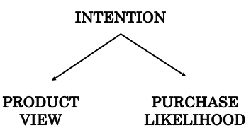

Beyond Correlation: Introduction to Causal Thinking (Part 2)
If correlation is not causation, then what is?Intro to Causal Thinking (Part 1)
How can we find Causality?
The outcomes are counterfactual because in reality, only one of such outcomes occurs for each individual. Let’s say we set John up for viewing at least 3 product options (X = 1) but no sales was generated (Y = 0). Then John’s counterfactual outcome Yi (X = 1) would be his actual outcome, which equals 0 while his other counterfactual outcome Yi (X = 0) remains forever unobserved.However, if I was able to design such an experiment in which I randomly assigned some users to treatment X = 1 and the others to treatment X = 0, then association would be causation, or
P ( Y = 1 | do(X) = 1) = P ( Y = 1 | X = 1)
It is proved that randomized experiments or randomized control trials (RCT) can yield convincing causal relationships. However, it is not always physically feasible to conduct a RCT. In this case, in order to restrict a random user to view less than 3 product options, we may have had to “corrupt” our own website to display only no more than 2 products. But doing so would have caused users to bounce as they may think there’s something wrong with the site. Sometimes, it is unethical or legally impermissible to perform such an experiment. Imagine a study to investigate whether obesity causes heart diseases requires feeding participants with junk food over an extended period of time to fatten them up!Fortunately, significant progress has been made within the field of causal inference for the past decade. And the Causal Revolution has equipped us with sufficient languages and methodologies to derive causality from observational studies.
From Correlation to Causation
Let’s retrace a bit. P( Y | do(X) ) can only be estimated through intervention in a randomized experiment. Without RCTs, we are left with classical probability P( Y | X ). The goal is to use this observational data to estimate causal effect by eliminating the do-operator. We cannot remove it by physically deleting the do notation but must go through legitimate and standardized manipulations.
Facing the difficulty of translating the observed insights to causal action, we had a hunch that other factors must have come into play. One possible factor is users’ intention. A user with high intention to buy the product tends to consider more options, thus more likely to complete the transaction. These entangled effects among these factors can be illustrated via a causal diagram

The graph consists of 3 nodes representing variables Intention (Z), Product View (X) and Purchase Likelihood (Y).
The direction of the edges or arrows indicates the causal effect from one variable to another.
The graph shows that Intention is the common cause of Product View and Purchase Likelihood, represented by two arrows pointing from Intention to the other variables.
The presence of one or more variables that renders causation distinct from association between treatment and outcome is called confounding and Intention is referred to as confounder.
Some literature restricts the definition of confounding to biases due to common causes of treatment and outcome and uses different terms for other sources of biases.
Such diagram is known as Directed Acyclic Graph (DAG), which incorporates knowledge and assumptions about the causal structure of interest which helps clarify the conceptutal problem at hand.
For structures like this one, if we assume that there are no other confounders, the causal effect of Product View on Purchase Likelihood can be determined by conditioning on Intention. Without adjusting for Intention, information is said to flow from Product View to Purchase Likelihood, which explains why an association was found before Intention is introduced. If we look at the data on users with low intention only, we may see that users do not make any purchase regardless of how many options they have viewed. Mathematically, this is equivalent to
P (Y = 1 | X = 1, Z = 0) = P ( Y = 1 | X = 0, Z = 0)
Given that our model is robust, we can get the same result by conditioning on users with high intention.
Then we can conclude that viewing 3 or more products does not cause users to purchase.
It is crucial to note that controlling for the third variable(s) does not always eliminate confounding bias.
Sometimes, it is the controlling practice that leads to biases.
The path that links X and Y through their common cause Z is an example of a backdoor path and this backdoor path can be blocked by controlling for Z to yield causal-effect relationship.
Adjustment for confounding requires knowledge and data of sufficient set of confounders.
Back to our example, measuring a user’s intention would be quite of a challenge, especially when most of our visitors remained unidentified.
Other methods to justify causality include Judea Pearl’s do-calculus and front-door criterion (manipulation the direct path from X to Y without passing through Z).
How to find causality is a massive topic, which I will explain in details in another article.
Conclusion
Humans are endowed with the ability to reason causally.
In the face of discrepancy, we are tempted to question why in the hope of discovering causes and effects.
Whenever I struggled to answer a causal question, I attributed the difficulty to lack of sufficient sample or robust techniques.
It never occurred to me that the answer was not contained in the data in the first place nor could be obtained from traditional statistical analysis.
It is absolutely normal to find your mind boggle upon the first touch with causal inference.
Let the burning questions drive you to explore the marvels of causality.
References
- Causality: Models, Reasoning and Inference — Judea Pearl (2009)
- Causal inference in statistics: An overview — Judea Pearl (2009)
- The Book of Why: The New Science of Cause and Effect — Judea Pearl and Dana Mackenzie (2018)
- Causal Inference: What If — Miguel A. Hernán and James M. Robins (2020)